Tutorial (Umberto LCA+, v10.0.3.146)
Michael Rustler
2024-01-06
Source:vignettes/tutorial_umberto10.Rmd
tutorial_umberto10.Rmd1 Install R packages
# Enable repository from kwb-r
options(repos = c(
kwbr = 'https://kwb-r.r-universe.dev',
CRAN = 'https://cloud.r-project.org'))
# Download and install kwb.umberto in R
install.packages('kwb.umberto')3 Import data
3.1 Directory with example .csv files
The example .csv file (in German format, i.e. decimals are indicated
with , and ; is used as field separator) was
exported from Umberto LCA+ (v.10.0.3.146) and attached to the R package
kwb.umberto as shown below:
temp <- system.file("extdata/umberto-lca+_v10.1.0.3.146",
package = "kwb.umberto")
dir(temp, pattern = ".csv")
#> [1] "smartech2_model-v0.1.0_input-v0.3.1.csv"3.2 Getting the data into R
Using the function kwb.umberto::import_rawdata() and
specifying the parameter csv_dir = temp)
imports the model results from one .csv file that is located in the
folder
D:/a/_temp/Library/kwb.umberto/extdata/umberto-lca+_v10.1.0.3.146.
rawdata <- kwb.umberto::import_rawdata(csv_dir = temp)
#> Importing csv file 'D:/a/_temp/Library/kwb.umberto/extdata/umberto-lca+_v10.1.0.3.146/smartech2_model-v0.1.0_input-v0.3.1.csv'
#> ℹ Using "','" as decimal and "'.'" as grouping mark. Use `read_delim()` for more control.
#> Rows: 8456 Columns: 15
#> ── Column specification ────────────────────────────────────────────────────────
#> Delimiter: ";"
#> chr (14): Project, Model, Net, Timestamp, Product, Product Name, Product Arr...
#> dbl (1): Quantity
#>
#> ℹ Use `spec()` to retrieve the full column specification for this data.
#> ℹ Specify the column types or set `show_col_types = FALSE` to quiet this message.To access the structure of the imported data one can run the following command:
head(rawdata)
#> # A tibble: 6 × 15
#> project model net timestamp product product_name product_arrow
#> <chr> <chr> <chr> <chr> <chr> <chr> <chr>
#> 1 smartech2_model-v0.1… 0_Re… Main… 12.09.20… VOL [A… VOL A1 (P3 -> T0…
#> 2 smartech2_model-v0.1… 0_Re… Main… 12.09.20… VOL [A… VOL A1 (P3 -> T0…
#> 3 smartech2_model-v0.1… 0_Re… Main… 12.09.20… VOL [A… VOL A1 (P3 -> T0…
#> 4 smartech2_model-v0.1… 0_Re… Main… 12.09.20… VOL [A… VOL A1 (P3 -> T0…
#> 5 smartech2_model-v0.1… 0_Re… Main… 12.09.20… VOL [A… VOL A1 (P3 -> T0…
#> 6 smartech2_model-v0.1… 0_Re… Main… 12.09.20… VOL [A… VOL A1 (P3 -> T0…
#> # ℹ 8 more variables: product_flow_amount <chr>, lci_method <chr>, phase <chr>,
#> # process <chr>, material_type <chr>, material <chr>, quantity <dbl>,
#> # unit <chr>3.3 Data aggregation
Once the data is imported into R, it can be aggregated as shown in the subsequent subchapters.
3.3.1 Grouping
data_grouped <- kwb.umberto::group_data(rawdata)
head(data_grouped)
#> # A tibble: 6 × 5
#> # Groups: lci_method, model, process [6]
#> lci_method model process unit quantity_sum
#> <chr> <chr> <chr> <chr> <dbl>
#> 1 ReCiPe Midpoint (H) w/o LT - climate change … 0_Re… T03: A… kg C… 3780859.
#> 2 ReCiPe Midpoint (H) w/o LT - climate change … 0_Re… T06: C… kg C… 180612.
#> 3 ReCiPe Midpoint (H) w/o LT - climate change … 0_Re… T07: C… kg C… 289429.
#> 4 ReCiPe Midpoint (H) w/o LT - climate change … 0_Re… T14: P… kg C… 392609.
#> 5 ReCiPe Midpoint (H) w/o LT - climate change … 0_Re… T15: S… kg C… 110.
#> 6 ReCiPe Midpoint (H) w/o LT - climate change … 0_Re… T21: f… kg C… -217232.3.3.2 Making pivot data
data_pivot <- kwb.umberto::pivot_data(data_grouped)
head(data_pivot)
#> # A tibble: 6 × 3
#> # Groups: lci_method, process [6]
#> lci_method process `0_Reference_Agri`
#> <chr> <chr> <dbl>
#> 1 cumulative energy demand - fossil, non-renewable e… T14: P… 10433117.
#> 2 cumulative energy demand - fossil, non-renewable e… T15: S… 1763.
#> 3 cumulative energy demand - fossil, non-renewable e… T21: f… -7072323.
#> 4 cumulative energy demand - fossil, non-renewable e… T31: E… -13154124.
#> 5 cumulative energy demand - fossil, non-renewable e… T4: El… 181431756.
#> 6 cumulative energy demand - nuclear, non-renewable … T14: P… 296075.
data_pivot_list <- kwb.umberto::create_pivot_list(data_pivot)
#> Joining with `by = join_by(lci_method, process)`
#> Joining with `by = join_by(lci_method, process)`
#> Joining with `by = join_by(lci_method, process)`
#> Joining with `by = join_by(lci_method, process)`
#> Joining with `by = join_by(lci_method, process)`
#> Joining with `by = join_by(lci_method, process)`
#> Joining with `by = join_by(lci_method, process)`
#> Joining with `by = join_by(lci_method, process)`
#> Joining with `by = join_by(lci_method, process)`
head(data_pivot)
#> # A tibble: 6 × 3
#> # Groups: lci_method, process [6]
#> lci_method process `0_Reference_Agri`
#> <chr> <chr> <dbl>
#> 1 cumulative energy demand - fossil, non-renewable e… T14: P… 10433117.
#> 2 cumulative energy demand - fossil, non-renewable e… T15: S… 1763.
#> 3 cumulative energy demand - fossil, non-renewable e… T21: f… -7072323.
#> 4 cumulative energy demand - fossil, non-renewable e… T31: E… -13154124.
#> 5 cumulative energy demand - fossil, non-renewable e… T4: El… 181431756.
#> 6 cumulative energy demand - nuclear, non-renewable … T14: P… 296075.4 Data export
Finally the resulting data can be exported to an EXCEL spreatsheet.
For each lci_method available in the imported dataset a
sheet named lci_method_1 to lci_method_9 will
be created, as there are 9 distinct lci_method available
for this example data set:
- ReCiPe Midpoint (H) w/o LT - climate change w/o LT, GWP100 w/o LT ,
- ReCiPe Midpoint (H) w/o LT - freshwater ecotoxicity w/o LT, FETPinf w/o LT ,
- ReCiPe Midpoint (H) w/o LT - freshwater eutrophication w/o LT, FEP w/o LT ,
- ReCiPe Midpoint (H) w/o LT - human toxicity w/o LT, HTPinf w/o LT ,
- ReCiPe Midpoint (H) w/o LT - marine ecotoxicity w/o LT, METPinf w/o LT ,
- ReCiPe Midpoint (H) w/o LT - marine eutrophication w/o LT, MEP w/o LT ,
- ReCiPe Midpoint (H) w/o LT - terrestrial acidification w/o LT, TAP100 w/o LT ,
- cumulative energy demand - fossil, non-renewable energy resources, fossil ,
- cumulative energy demand - nuclear, non-renewable energy resources, nuclear
export_path <- file.path(temp, "results.xlsx")
print(sprintf("Exporting aggregated results to %s", export_path))
#> [1] "Exporting aggregated results to D:/a/_temp/Library/kwb.umberto/extdata/umberto-lca+_v10.1.0.3.146/results.xlsx"
write_xlsx(data_pivot_list,
path = export_path)5 Data visualisation
In addition a simple visualisation of the imported and grouped data
can be performed by calling the function
kwb.umberto::plot_results() as shown below:
rawdata <- kwb.umberto::import_rawdata(csv_dir = temp)
#> Importing csv file 'D:/a/_temp/Library/kwb.umberto/extdata/umberto-lca+_v10.1.0.3.146/smartech2_model-v0.1.0_input-v0.3.1.csv'
#> ℹ Using "','" as decimal and "'.'" as grouping mark. Use `read_delim()` for more control.
#> Rows: 8456 Columns: 15
#> ── Column specification ────────────────────────────────────────────────────────
#> Delimiter: ";"
#> chr (14): Project, Model, Net, Timestamp, Product, Product Name, Product Arr...
#> dbl (1): Quantity
#>
#> ℹ Use `spec()` to retrieve the full column specification for this data.
#> ℹ Specify the column types or set `show_col_types = FALSE` to quiet this message.
data_grouped <- kwb.umberto::group_data(rawdata)
kwb.umberto::plot_results(grouped_data = data_grouped)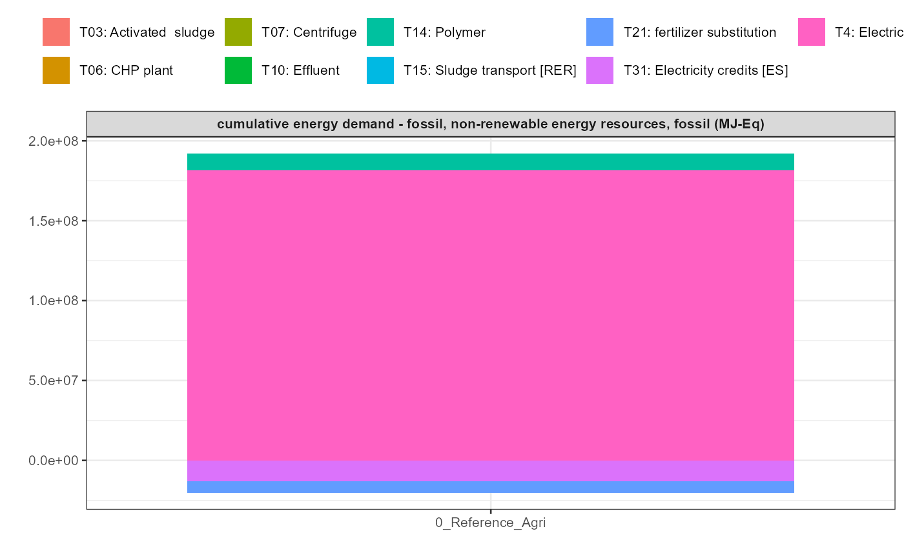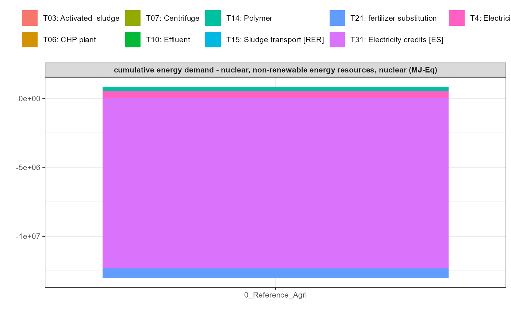 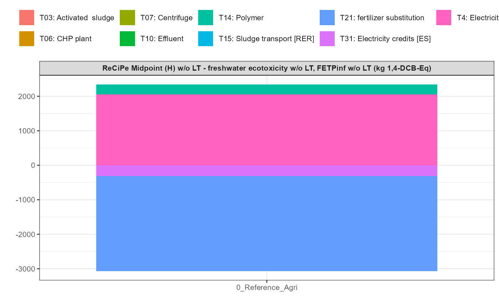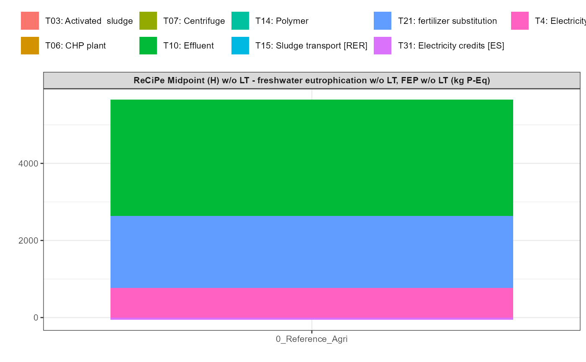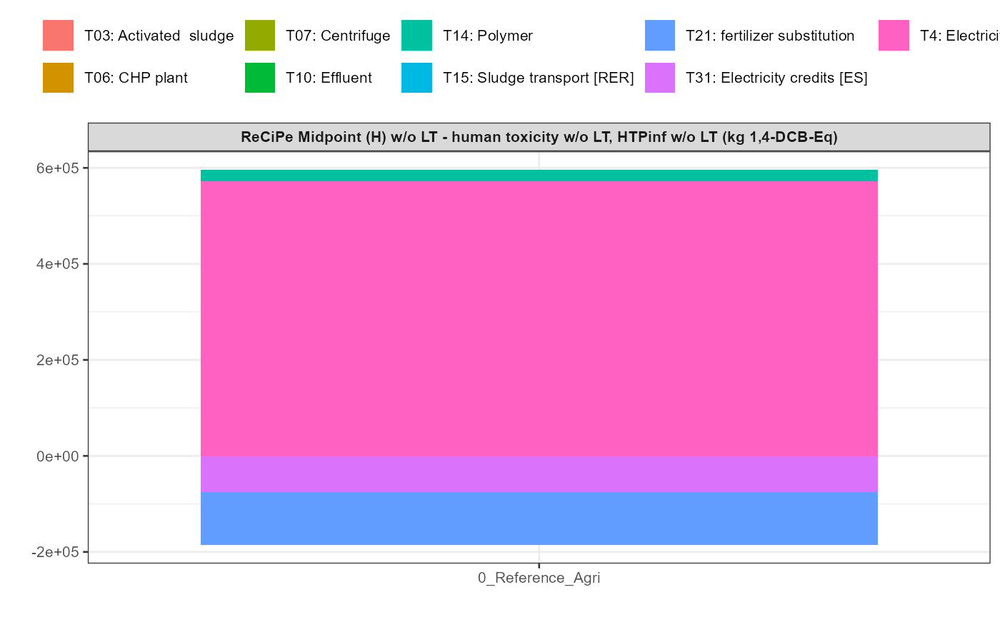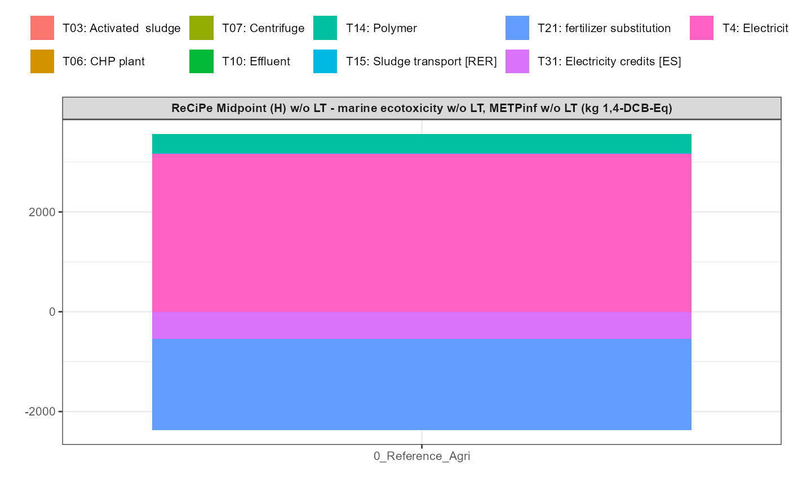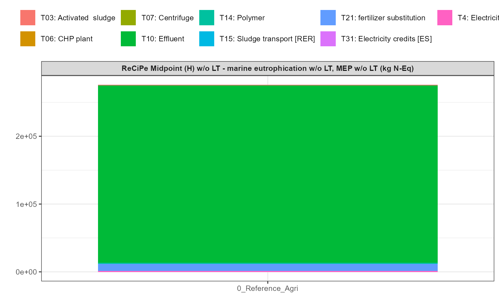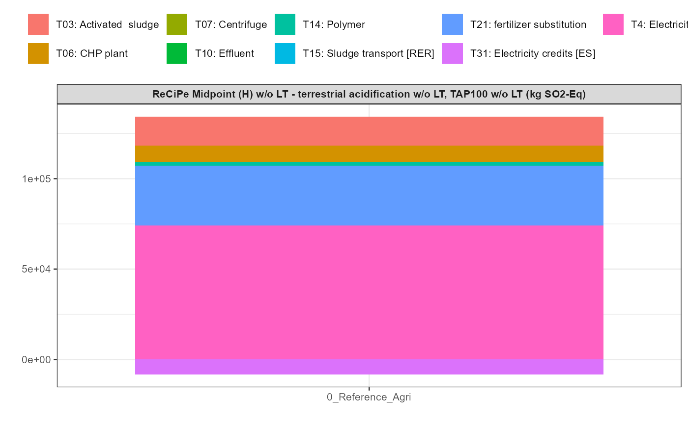
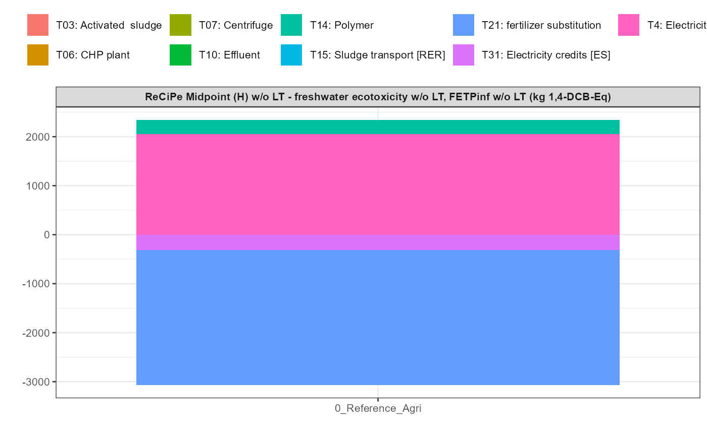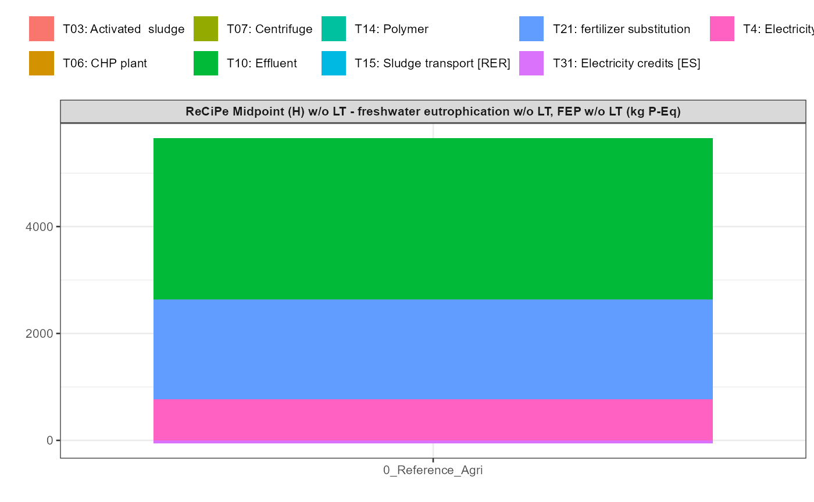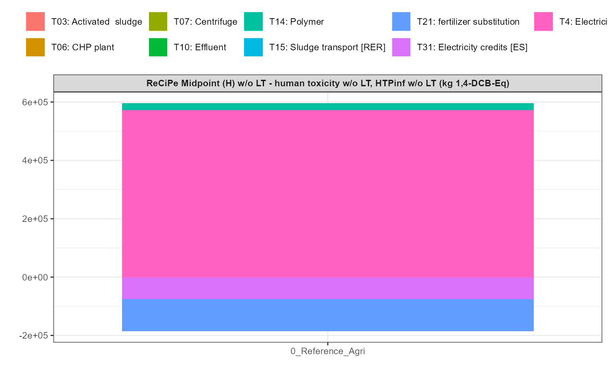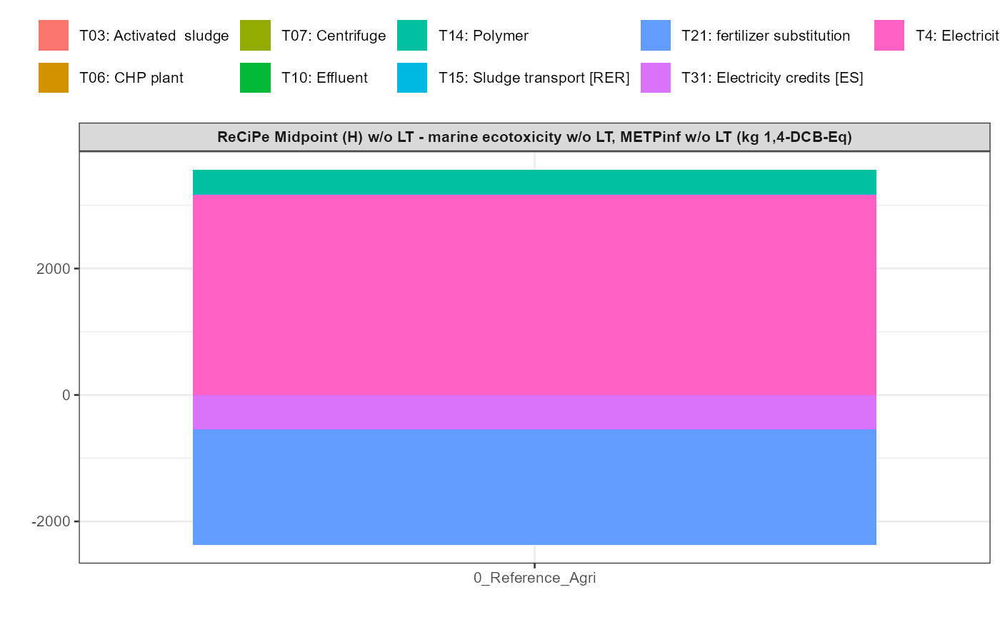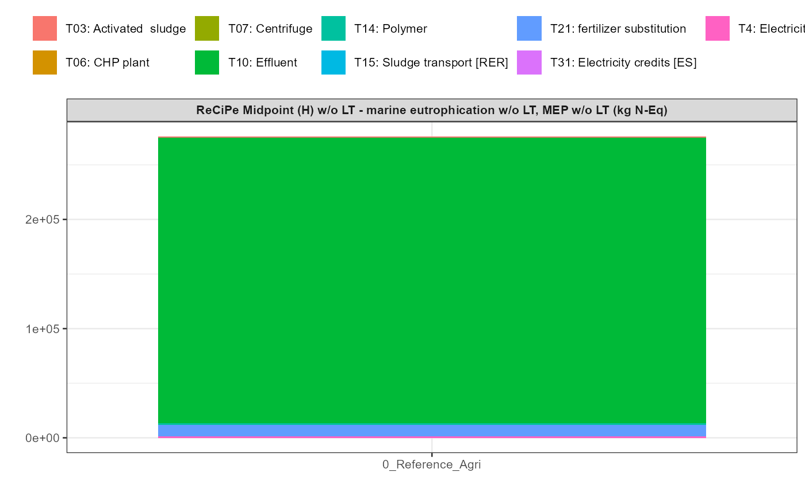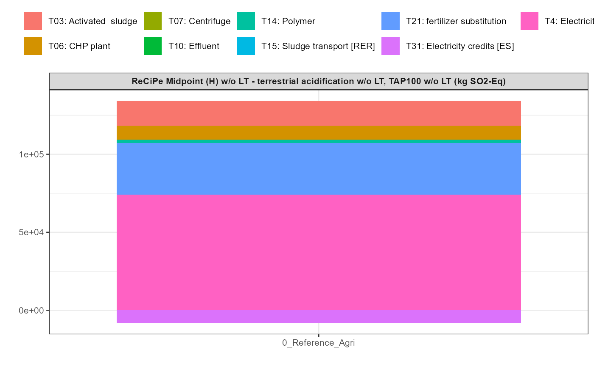